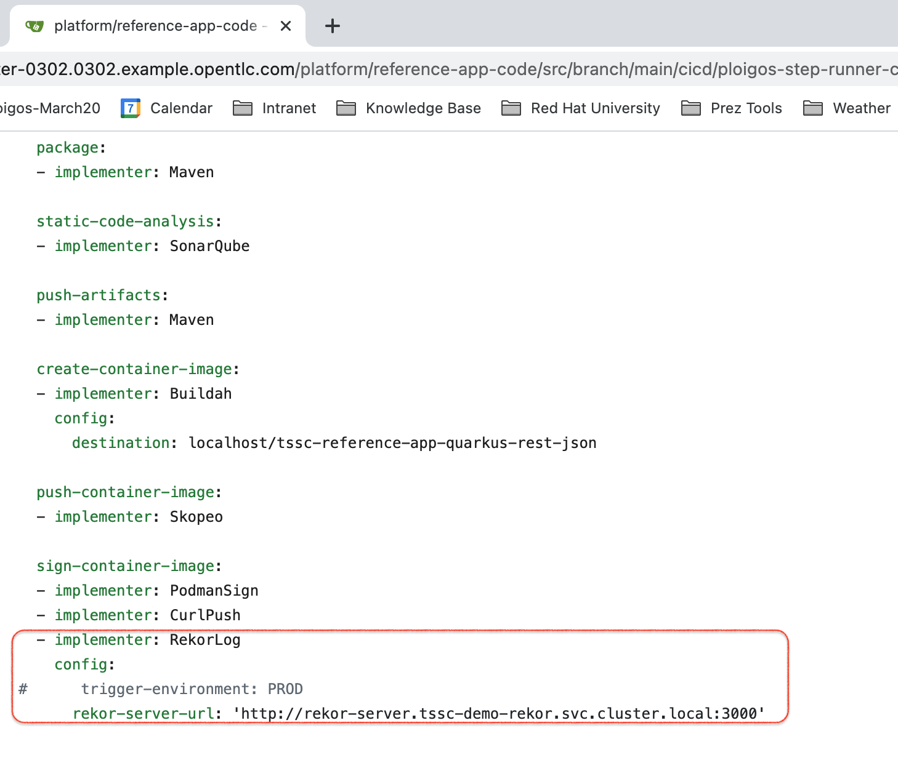
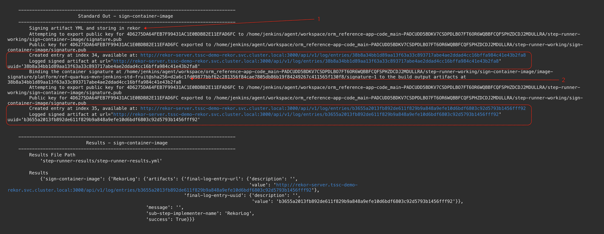

Secure Software Factory Demo (Dev Mode)
Create and Examine (Jenkins) Pipeline
-
Log into the openshift console and go to the
devsecopsproject in Developer PerspectiveIf you need to customize the openSCAP checks against your repo, then you must first do the following before proceeding with the walkthrough:
-
Update the default platform pipeline configuration to entirely rely on the config from the built project:
oc create configmap ploigos-platform-config \ --from-file=config.yml=<(oc get cm/ploigos-platform-config -n devsecops -o jsonpath='{.data.config\.yml}' \ | yq - d 'step-runner-config.container-image-static-compliance-scan' \ | yq - d 'step-runner-config.container-image-static-vulnerability-scan') \ --dry-run=client -o yaml | oc replace -n devsecops -f - -
Ensure that the project that you intend to build has configuration information for the (parallel) openSCAP steps. For example:
-
-
Zoom out to show the whole of the platform
-
Click on
Searchand look for tsscpipeline -
Click Create TsscPipeline
-
Fill in the pipeline with the contents of this
apiVersion: redhatgov.io/v1alpha1 kind: TsscPipeline metadata: name: tsscpipeline-jenkins spec: appName: reference-app appRepo: destinationRepoName: demo-app-code sourceUrl: 'https://github.com/hatmarch/ploigos-reference-app.git' autoStartPipeline: true helmRepo: destinationRepoName: demo-app-helm sourceUrl: 'https://github.com/hatmarch/ploigos-reference-helm.git' serviceName: reference-app-fruit -
Click
Createwhich will create the custom resource and the operator will begin setup -
Once the
TsscPipelineresource is ready, then return to DevPerspective and search for Jenkins in the (zoomed out) devconsole -
Click the route badge on the Jenkins instance to open the Jenkins master
-
Login using your OpenShift Credentials
-
Once in the Jenkins console, click on Open Blue Ocean
-
Select the pipeline (it should be in progress) and show the pipeline view of the running instance
-
Let’s show how our reference app interacted with this pipeline by opening the
Jenkinsfileof the reference app by using this link:echo "http://$(oc get route gitea -n devsecops -o jsonpath='{.spec.host}')/platform/demo-app-code/src/branch/main/cicd/Jenkinsfile"The login details for the internal git repo are
#USER oc get secret gitea-admin-credentials -o jsonpath='{.data.username}' -n devsecops | base64 -d echo "" #PASSWORD oc get secret gitea-admin-credentials -o jsonpath='{.data.password}' -n devsecops | base64 -d -
You should see something like the example below. Make sure you draw a mapping between the stages of the Blue Ocean Pipeline and what’s in this Jenkinsfile

-
Next show the config.yaml
echo "http://$(oc get route gitea -n devsecops -o jsonpath='{.spec.host}')/platform/demo-app-code/src/branch/main/cicd/ploigos-step-runner-config/config.yml"Figure 1. Notice rekor-server-url config for RekorLog substep -
Show that the Rekor server for this demo is running in cluster by switching to the
tssc-demo-rekorand looking at the topology viewFigure 2. RekorLog is also publicly accessible -
Open up the log view on the rekor server and show that entries were logged
Figure 3. Two entries in RekorLog made by build chain -
Return to the Jenkins Blue Ocean tab and look at the logs for the
CI: Sign Trusted Container Imagestage -
Scroll down to the bottom of the logs and show the two rekor log events
Figure 4. Two log events